Ugandan coffee, ready when you arrive.
Order ahead from 18 Endiro cafés, for pickup or delivery.

From Bukalasi farms to your cup.
Endiro grows, buys, brews and serves its own coffee. We call it tree to cup.
The farms
Farmer groups in Bukalasi, on Mt. Elgon. Most of the farmers are women. They own their land.
The harvest
Ripe red cherries, processed by the fully washed method. Endiro pays the farmers above the Fair Trade floor price.
Your cup
Brewed in our cafés by baristas we train. From espresso to jerry can cold brew.

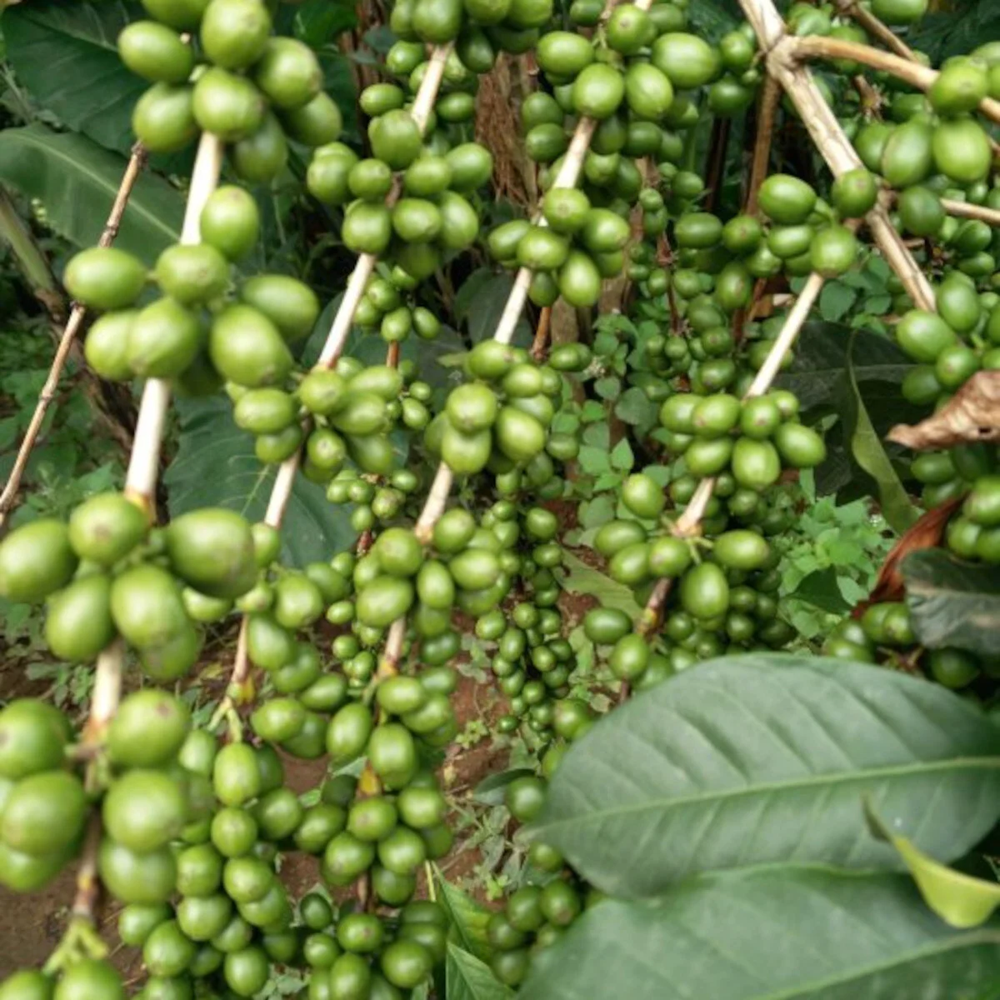
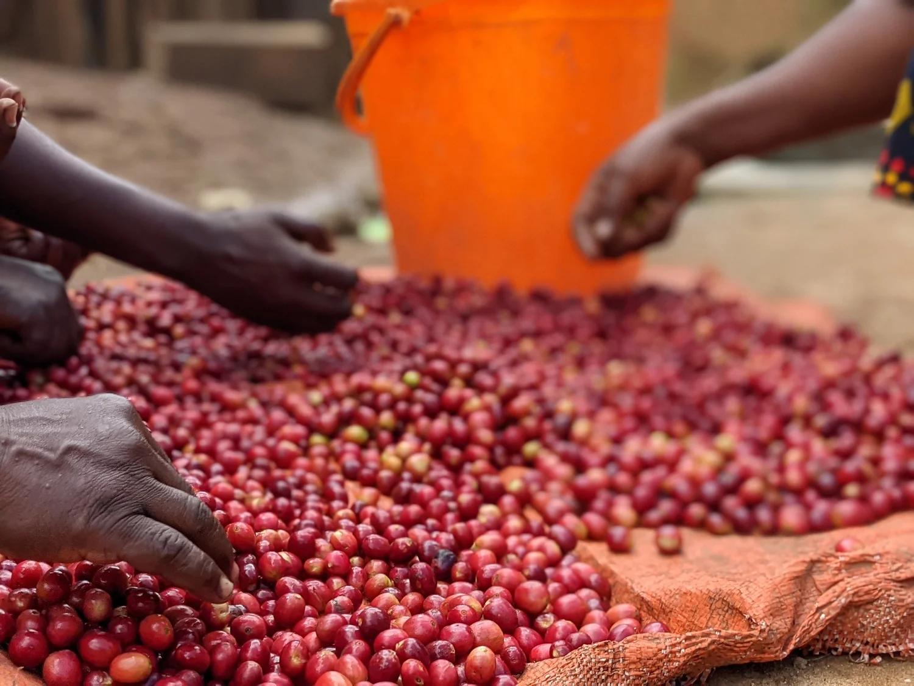
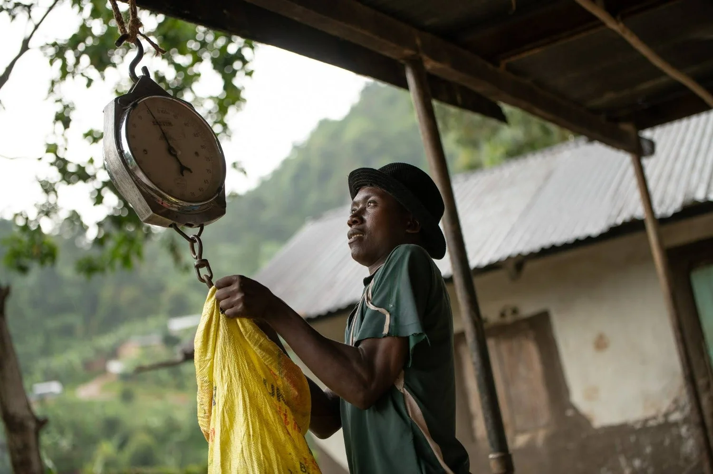
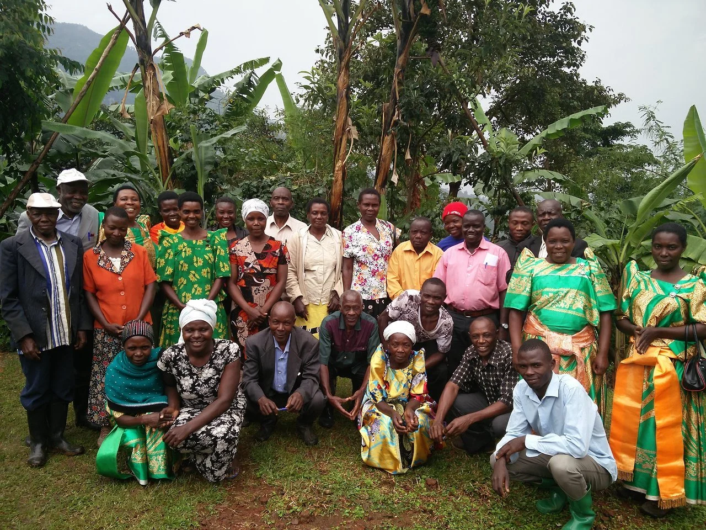
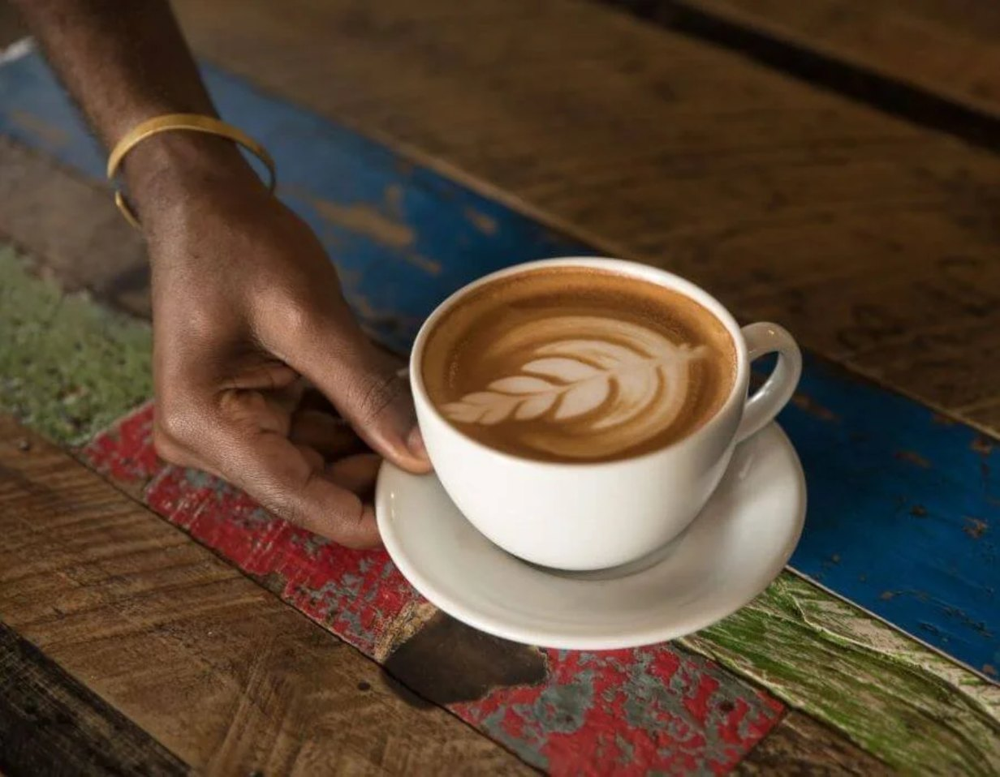
18 cafés across Uganda.
In Kampala, in Entebbe and along the highways, from Mbale to Fort Portal. Most open at 7 in the morning.
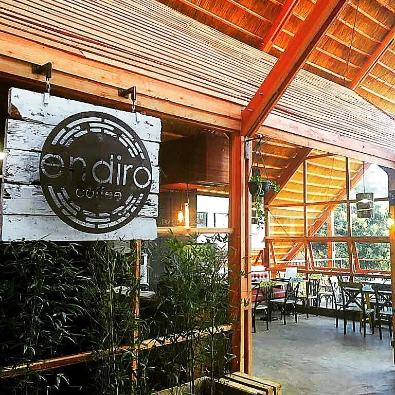

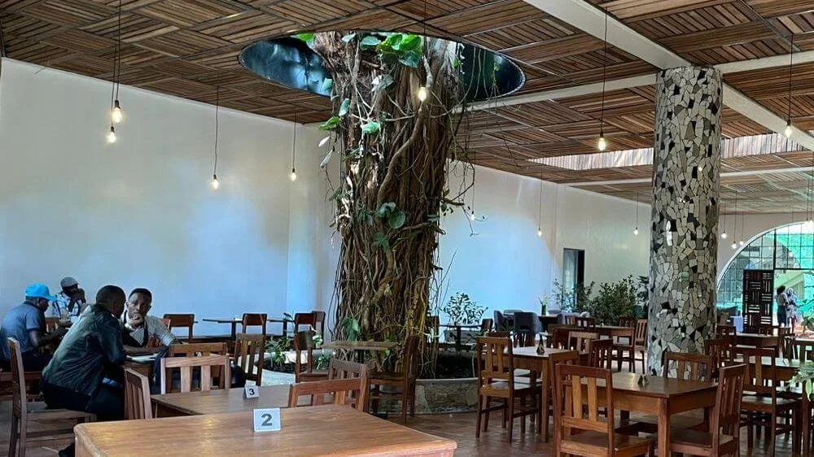
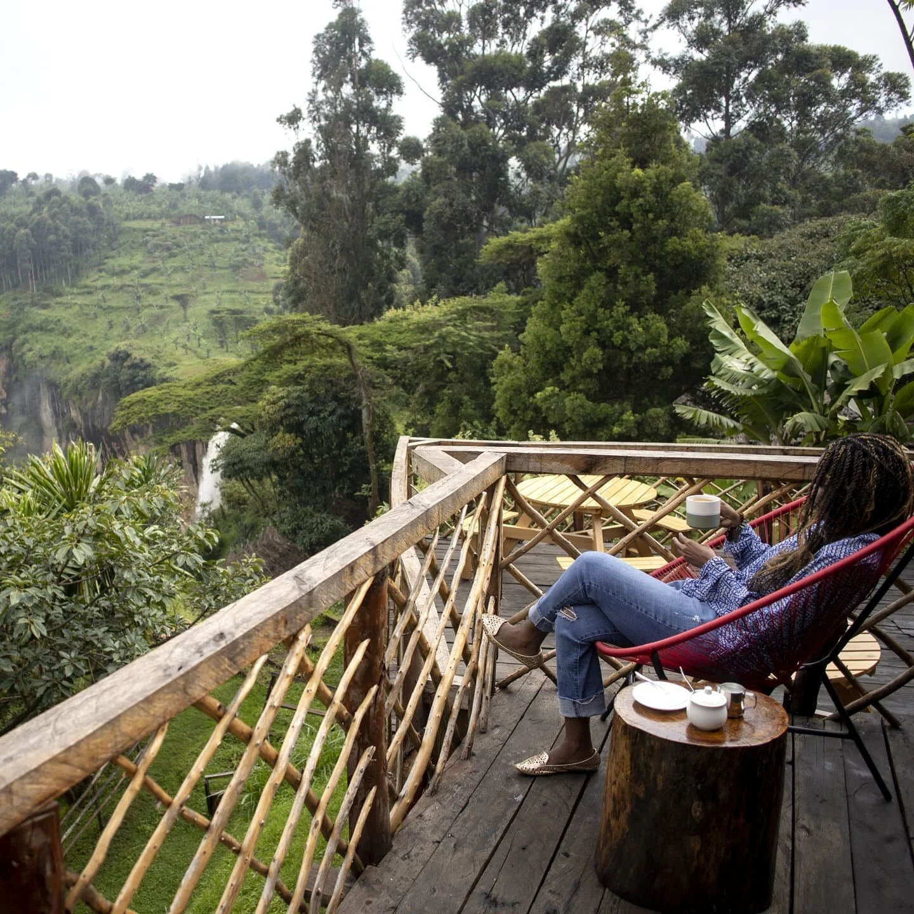
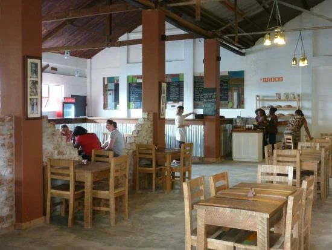
18 cafés
-
Muyenga (Tank Hill)
Mon-Sun 7AM-10PM
-
Kisimenti (Kololo)
Mon-Sun 7AM-10PM
-
Nakasero (Endiro Academy)
Mon-Sun 7AM-10PM
-
Standard Chartered (Town)
Mon-Fri 9AM-5PM, Sat 9AM-1PM
-
Naguru (The Surgery)
Mon-Sun 7AM-5PM
-
Shell Bunga
Mon-Sun 7AM-9PM
-
Shell Bugolobi
Mon-Fri 6AM-10PM, Sat-Sun 6AM-9PM
-
Mukwano Mart (Industrial Area)
Mon-Sat 7AM-7PM
-
Shell Entebbe
Mon-Sun 7AM-9PM
-
Wobulenzi
Mon-Sun 7AM-9PM
-
Shell Buwama
Mon-Sun 7AM-9PM
-
Shell Iganga
Mon-Sun 7AM-10PM
-
Mbale
Mon-Sun 7AM-9PM
-
Busia
Mon-Sat 9AM-7PM
-
Sipi Falls (Lacam Lodge)
Mon-Sun 7AM-9PM
-
Moroto (Kara-Tunga)
Mon-Sun 8AM-7PM
-
Shell Fort Portal
Mon-Sun 7AM-8PM
-
Buliisa
Mon-Sat 7AM-7PM
No café matches. Try a town name, or see all cafés.
We hire people of all abilities.
8%
of people with disabilities in Uganda have a formal job.
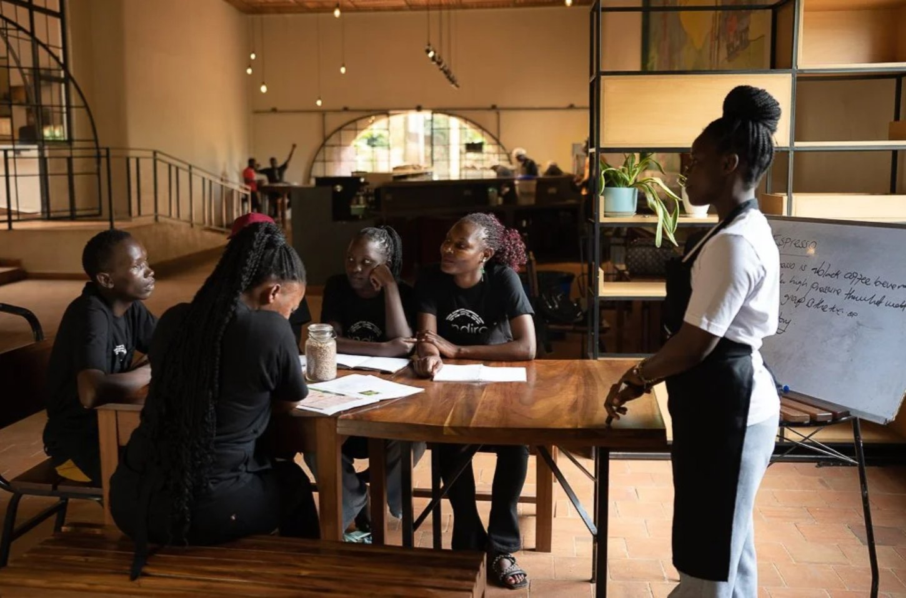
Our Sign Language Café opened in Nakasero in 2020. Today, staff with disabilities work in all our cafés, deaf staff too.
Order online and your order number is on your phone, so nobody has to shout over the counter.
About Endiro AcademyFrom the journal.
Coffee prices, farming and the future of cafés, written by the Endiro team.

Coffee is Getting So Expensive, But at Least the Farmers are Finally Getting Paid. Right?
Coffee costs more in the shop. This article asks why high exchange prices do not always reach the farmer.
Read the article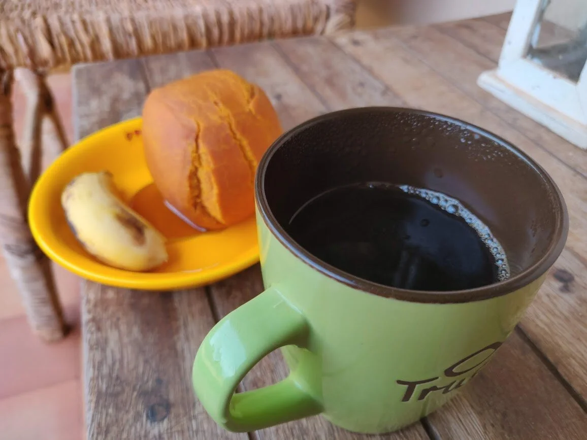
The Glorious Cup of Bukalasi Coffee
Why Endiro started its own farmer groups in 2015, and the facts and tasting notes of the Bukalasi coffee.
Read the articleAll articlesYour usual, without the queue.
Pick a café, order, and pay from your phone. We start when you pay.